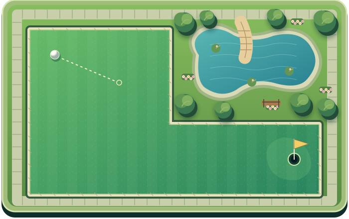
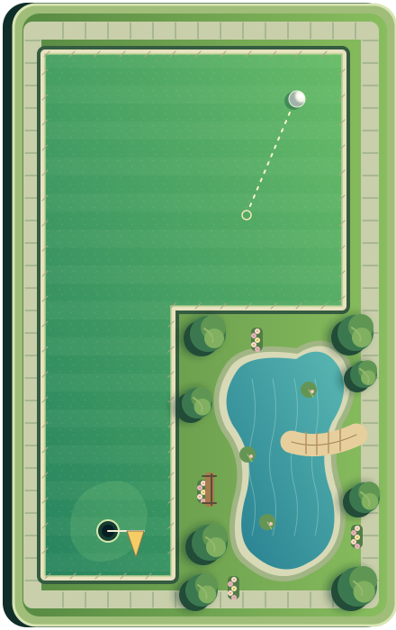

MEADOW MINI · HOLE 2 / 6
The garden dogleg02
PAR 3Stroke 2


MEADOW MINI BOTANICAL CLUBAlex 2 strokesNova 3 strokesKai 2 strokes
AlexYour putt · 0:32
Drag to aim · release to adjust · tap Putt when ready
 PLAYGRIDMini Golf
PLAYGRIDMini Golf

MEADOW MINI BOTANICAL CLUBDrag to aim · release to adjust · tap Putt when ready